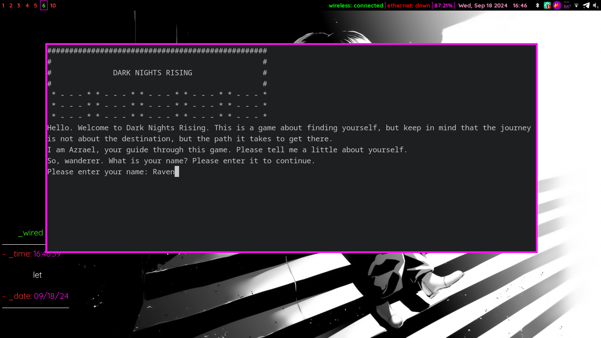

now | blog | wiki | recipes | bookmarks | contact | about | donate
* * * back home * * *
a text-based game about isolation and temptations
Dark Nights Rising is a text-based game I have been working with with my wife, RyokoUmbra, under the Raven's Ridge name.
It is a game that aims to explore isolation and loneliness, and the feelings that pervade one's mind. The story revolves around the character going through a series of events in their mind in order to confront the darker parts of themselves.
In the game, decisions made by the player can change how things go. For example, some decisions will move the player forward in the story, while some decisions may end up getting the character killed.
Dark Nights Rising works through a family of shell scripts. Each script is its own Scene that is tied to a Story, located in the /stories folder. Every script is driven by functions sourced from libdnr.sh, located in the /library folder.
Variables that need to be called throughout the game are set by the user during the Introduction, and are stored for later reference in the automatically-generated playerconfig.txt file.
We want Dark Nights Rising to be easy to run on any GNU/Linux system, so we are trying to stay as light on dependencies as possible. As such, the game only relies on two programs being installed on the user's system:
flite: We use this for voice synthesis.mpg123: We use this to control the game's soundtrack while the game is in progress.There is a handy installer that you can run to install dependencies and give the necessary Dark Nights Rising scripts executable privileges.
Dark Nights Rising has an original soundtrack written by me, under the x3nyth name. The soundtrack will also have its own album, called Dark Nights Rising, and I'll upload that here for anyone that wants to give it a download.
The music in this soundtrack is mostly ambient and experimental, to add to the game's isolated and lonely atmosphere.
If you want to give Dark Nights Rising a shot, follow these simple directions to get it up and running on your system.
Please note that Dark Nights Rising is currently still incomplete, so you will run into either bugs or a stopping point while playing. When the game reaches completion, this page will be updated to reflect the change.
Since Dark Nights Rising is still in an incomplete state, it isn't currently packaged. However, there are handy installer scripts to help you get it up and running.
Here's the process - we're going to assume you're running Debian in this example:
#!/usr/bin/env bash
# grab dark nights rising from the repo
git clone https://github.com/rav3ndust/DarkNightsRising
cd DarkNightsRising
# make the appropriate installation script executable and run it
chmod +x /installers/debian-installer/deb-dnr-install.sh
bash /installers/debian-installer/deb-dnr-install.sh
After the installer script runs, Dark Nights Rising should be installed on your system. You can launch into it by running darknightsrising.
Dark Nights Rising is free software, and the code for the game is licensed under the GPLv3.
The pictures and music for the game (everything in the /soundtrack and /graphics folders) are licensed under the Free Art License.
Here's where you can find Dark Nights Rising's source code.
RyokoUmbra handles most of the story writing, and most of the art that accompanies the game.
rav3ndust (hey, that's me!) handles the programming and soundtrack.